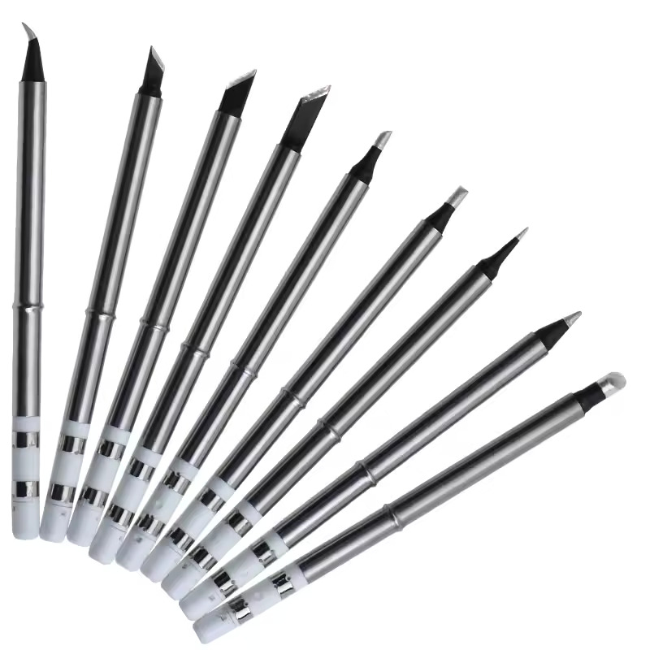
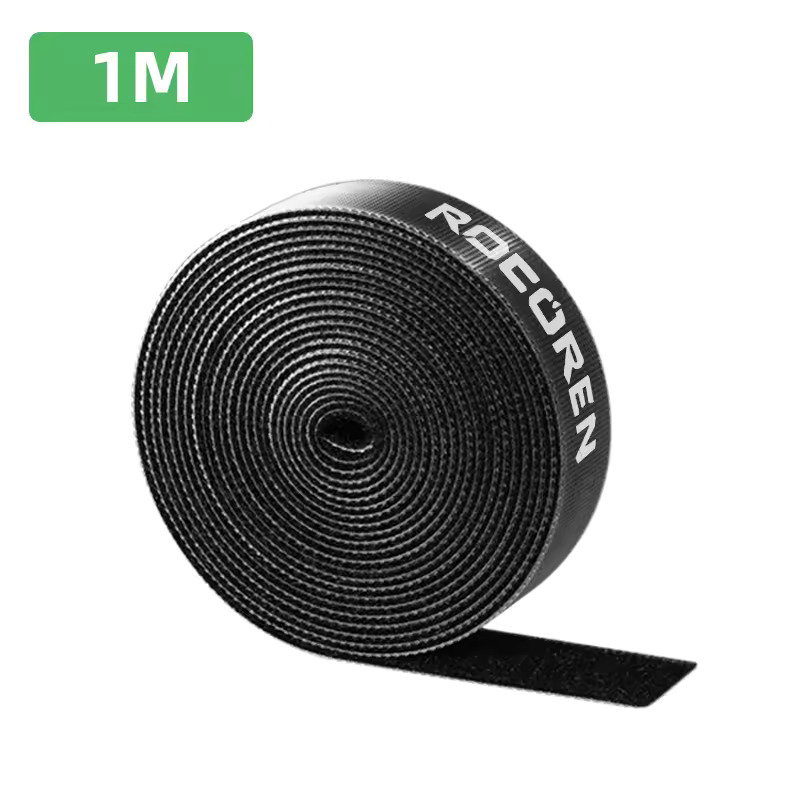
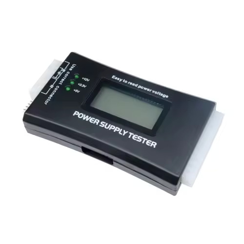
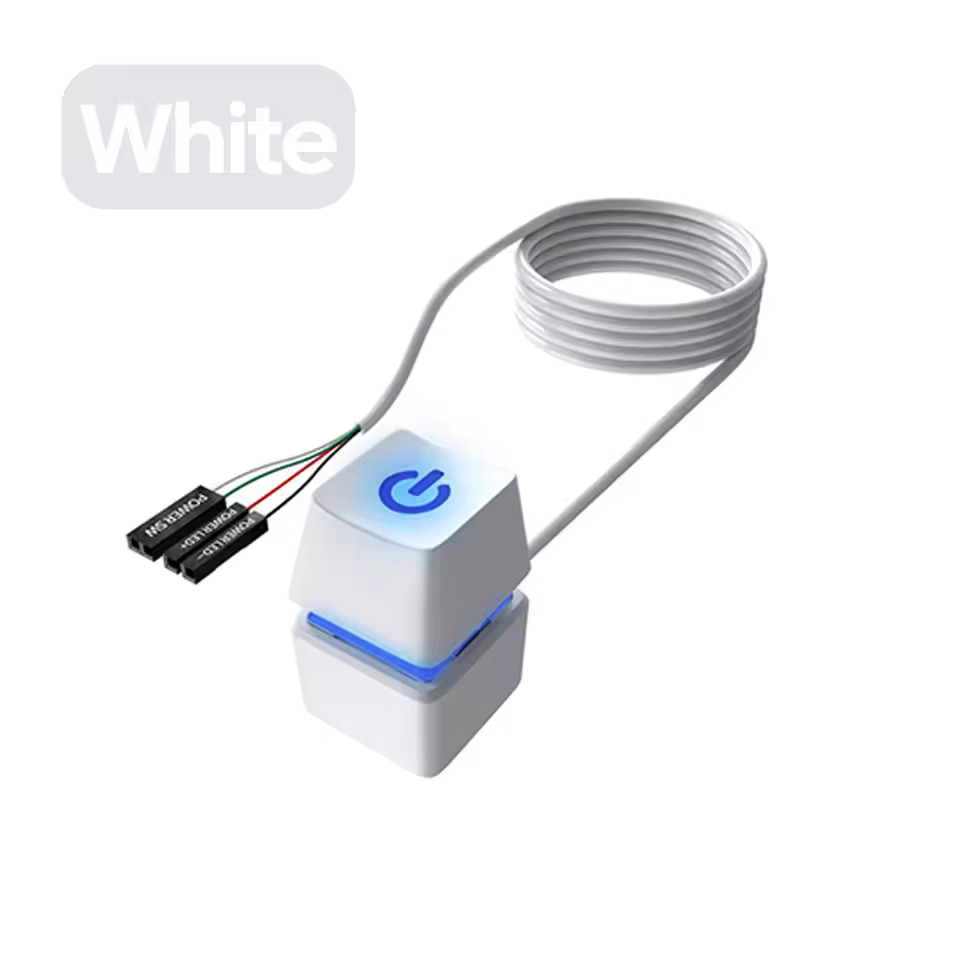
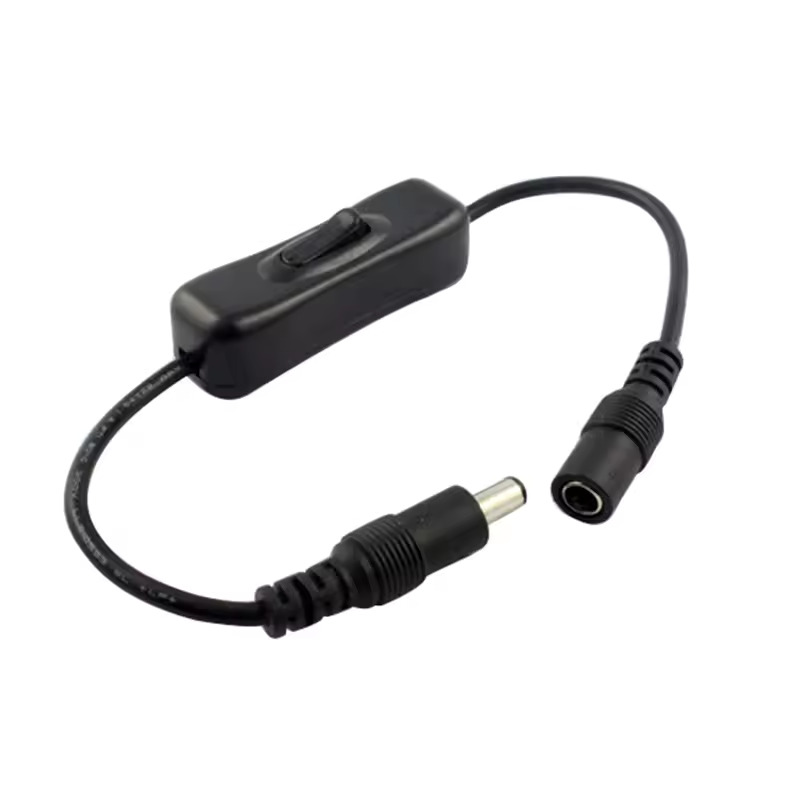
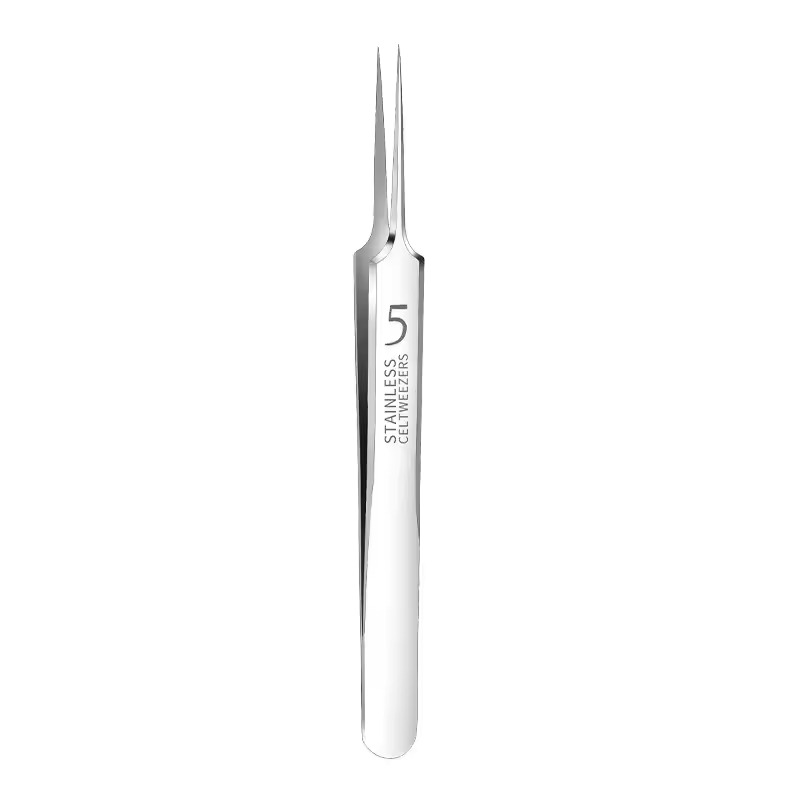
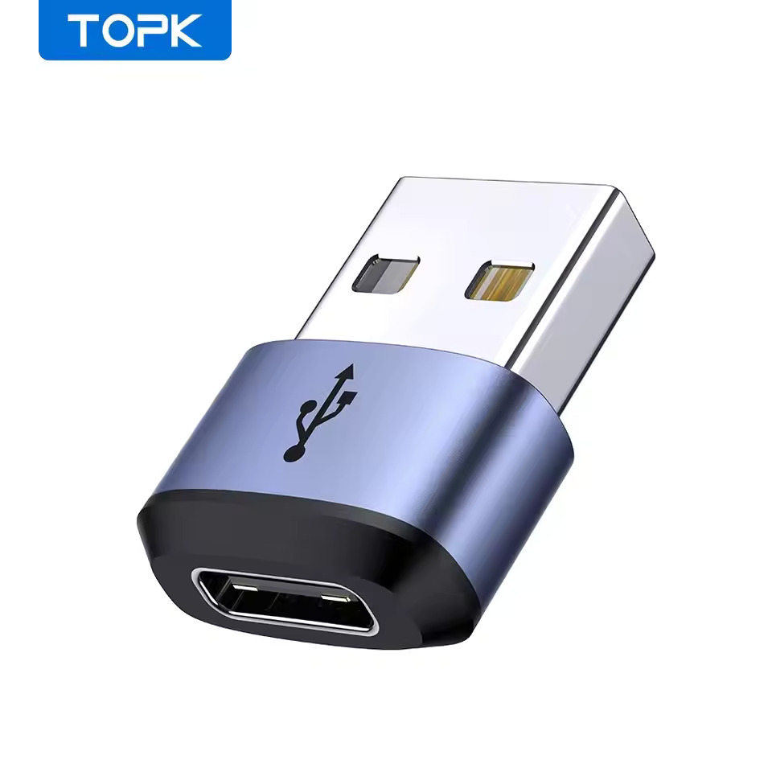
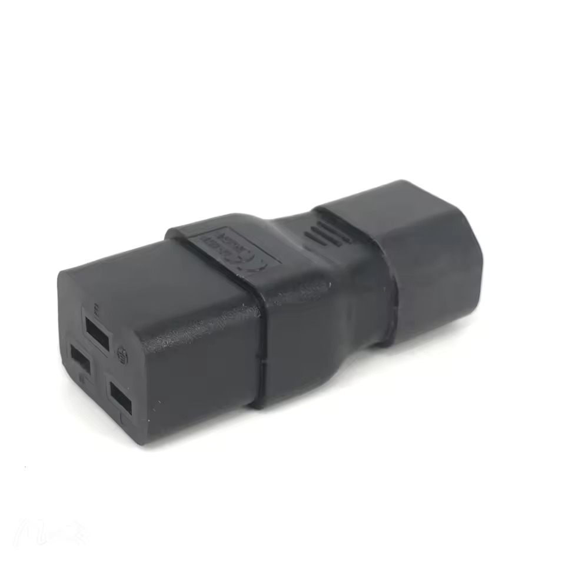

3.商品紹介
実際に購入したものをいくつか紹介します。値段は買ったときのものです。けっこう上下するのでカートに入れて安いときを狙うといいかも。
はんだこて先 ¥360

評価：★★★★☆
秋月で購入したUSB-Cはんだごてのこて先を買いました。問題なく接続はできましたが、なぜか全種初回起動時は熱センサーが暴れてなんかよくわからんことになりました。一回加熱すると直って普通に使えています。BC2/KR/ILSを買いました。
商品リンク
HDMIスプリッター ¥250

評価：★☆☆☆☆
ちゃんと調べずに買った自分が悪いかもですが、同時に出力できるのは1つのみで、切り替えを抜き差しで行うという商品でした。（ただのHDMI延長ケーブルと何が違うんだ…？）HDMIキャプチャの上流に設置して、映像パススルー用として買ったのですがこれは使えません残念。
商品リンク
はんだごてクリーナー ¥300

評価：★★★★☆
よくあるはんだごてのこて先をきれいにする金属のわしゃわしゃ。一応普通には使えています。
商品リンク
ケーブルを束ねるマジックテープ1m ¥160

評価：★★★★☆
針金とどっちがいいのか比べるために購入しました。自分で切って好きな長さに調整できるのがいい点です。ただ、1mは意外と短かったです。でかいケーブルを束ねて保管するように活躍しています。埃つくとうげえになりそうなので使いどころはえらぶかも。
商品リンク
PC電源チェッカー ¥700

評価：★★★★★
PC電源のチェッカーです。刺すだけで12V系や5V系などが正常に出てるか確認できる便利なやつです。ジャンクな電源をたまに触るのでその時に使っています。
商品リンク
マザーボード電源スイッチ ¥300

評価：★★★★☆
マザーボードの電源スイッチです。マザボで遊ぶ時の電源投入をドライバーでショートさせるのがめんどくさくなったので買いました。青軸でカチカチしています。あとゲーミング色に光ります。青単色だと思ってたのでちょっと悲しい。
商品リンク
DCコネクタのスイッチ ¥200

評価：★★★☆☆
DCコネクタのスイッチです。ジャック(メス)側が不良で刺さりませんでした。線をぶった切って自分でつけなおしたら正常に動作しました。PD→DC変換器と一緒に使っており便利です。
商品リンク
先細ピンセット ¥90

評価：★★★★☆
先端のかみ合わせは意外としっかりしていました。ちょっと弱そうなので力入れると曲がってしまいそうです。まだ未使用なので使い勝手は不明。
商品リンク
USB-AをCに変換アダプタ ¥100

評価：★★★★★
規格違反だけどたまにあると便利なアダプタ。値段の割に質感がよくてよい。USBC-Cケーブルと一緒に持ち歩くと、A-Cが欲しいときに変換できる。他にもいろいろなUSB変換を持ち歩いているのでどこでも好きなUSBケーブルが作れる（A-Aも）。
商品リンク
電源ケーブルの変換器 ¥310

評価：★★★★☆
C14のケーブルをC19のソケットに接続するための変換器です。C19のケーブルはあまり安くないので、C14のケーブル+変換を買うほうが安いです。メインPCの電源をC19のに交換する際にC20のケーブルを使わず、C14を使い回せないかなと思って買いました。動作は問題なかったのですが、奥行きがでかくなってPCのおさまりが悪くなったので結局使ってません。90°曲がってるやつも売ってそうなので、そっちのほうがいいかな。テスト用として使います。
参考：IEC 60320 - ウィキペディア
商品リンク
はんだ吸い取り器 ¥600

評価：★★★★☆
基板から部品を取り外すためにはんだを温めながら吸い取ることができる器具です。一応しっかり吸ってくれました。温まるのが遅いことと、ごみ捨てする部分を外しにくかったのは欠点。
商品リンク
M.2 SATA用TypeCケース ¥480

評価：★★★★★
M.2 SATA SSDをUSB-C接続で使うためのケースです。質感がよい、ねじレスなのでケースの開閉がしやすいので高評価です。速度も、SATA SSDの限界を出せていそうです。
商品リンク
SATA-USB 接続アダプタ ¥420

評価：★★★★☆
SATAのHDDとSSDをUSB接続できるやつです。3.5インチHDD用に、ふつうのDCジャックで12Vを供給できるようになっています。接続部分がでかいのがちょっと邪魔。
商品リンク
USB-C延長コネクタ ¥190

評価：★★★★☆
たぶんフル結線？後述するUSB-Cの謎アダプタと組み合わせて、VRゴーグルに電源と信号を供給する用で買いました。普通に使えた。
商品リンク
結束バンド 3x150mm 200本入 ¥220

評価：★★☆☆☆
袋が汚かった。中身はふつう。
商品リンク
A1用LEDライトバー ¥640

評価：★★★★☆
Bambu Labの3DプリンターA1用のLEDライトバーです。最初からついている照明はしょぼくて何も見えないのですが、これをつけるとかなり明るくなり、外出先からの造形物監視に役立ちます。本体のLEDの明かりをセンシングしているので、スライサー、アプリからライトのON/OFFが可能です。ほかのプリンター用のも売っていました。
商品リンク
フィラメント保存用真空バッグ 10個入 ¥366

評価：★★★★☆
3Dプリンター用フィラメントを保存するための真空バッグです。手動で空気を抜いて保存しておけます。ポンプが面倒なのが欠点。
商品リンク
細HDMIケーブル3m ¥155

評価：★★★★★
細くて柔らかいので取り回しが楽です。追加で1mのも買って持ち歩いています。
商品リンク
8in1 USB-Cハブ ¥400

評価：★★★☆☆
USB-A x 4、USB-C、SD、microSD、イヤホンジャックがついているUSB-C(A)ハブです。質感はいいです。イヤホンジャックの右チャンネルにノイズが載っていました。それ以外はふつう。
商品リンク
2 in 1 USB-Cアダプタ ¥245

評価：★★★☆☆
USB-Cの電源と通信線を分けられるっぽいアダプタ。 VRゴーグルに給電しながら映像信号を送ることができるかも？と思い購入しましたが、まだうまく動いていません。
商品リンク